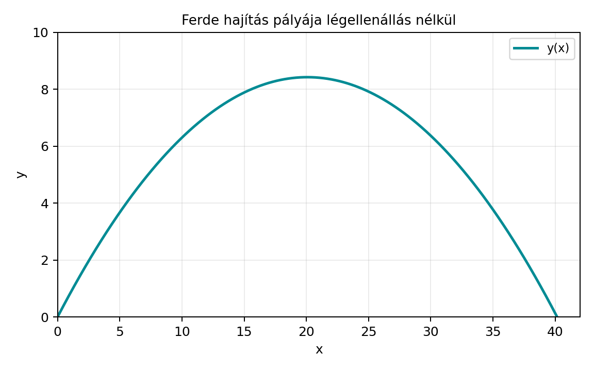

39.1 1. projekt: ferde hajítás és
bolygópálya – vektorfüggvények és differenciálegyenletek
39.1.1 Motiváció: a ferde
hajítástól a bolygópályáig
Mi köti össze egy elhajított labdát és egy bolygót? Elsőre úgy tűnik,
hogy semmi: a labda néhány másodpercig repül, majd földet ér, a bolygó
pedig évmilliárdokon át kering. A fizika szintjén azonban ugyanaz a
Newton-féle mozgásegyenlet,
,
írja le mindkettőt – más erőtörvénnyel. A ferde hajításnál a gravitációs
erőt állandónak tekinthetjük (a Föld felszíne közelében), a
bolygómozgásnál viszont az erő nagysága a távolsággal csökken, és mindig
a vonzó test felé mutat: ez a centrális erőtér. Ez a
projekt azért értékes, mert egyszerre gyakoroltatja a
differenciálegyenletek felállítását, a vektoros számolást, a megmaradási
törvényeket és a numerikus szimulációt – mindet egy konkrét,
ellenőrizhető fizikai feladaton. A fejezet során lépésről lépésre
felépítjük a ferde hajítás modelljét, először légellenállás nélkül, majd
lineáris légellenállással, végül eljutunk a Kepler-problémához, és
megmutatjuk, hogyan lehet numerikusan kiszámítani és
energiaellenőrzéssel validálni egy bolygópályát.
39.1.3 1. lépés: Ferde hajítás
légellenállás nélkül
39.1.3.1 A modell felállítása
Tekintsünk egy
tömegű pontszerű testet, amelyet
-ban
az origóból
nagyságú kezdősebességgel, a vízszinteshez képest
szögben elhajítunk. A
tengelyt függőlegesen felfelé, az
tengelyt vízszintesen vesszük fel. A légellenállást elhanyagoljuk, és a
gravitációs gyorsulást
állandónak tekintjük. Newton második törvénye szerint:
ahol
a függőleges egységvektor. Komponensenként:
Mivel
,
a vízszintes sebességkomponens állandó; a függőleges komponens
egyenletesen változik. A kezdőfeltételek:
Integrálva a gyorsulást az idő szerint:
További integrálással a helyzet:
Ez a ferde hajítás paraméteres pályája.
39.1.3.2 A pálya egyenlete és a
hatótávolság
A
paramétert kiküszöbölhetjük az
-ből:
.
Ezt
-be
helyettesítve:
Ez egy lefelé nyíló parabola. A hatótávolság az az
érték, ahol a test visszatér a
szintre. Megoldva az
egyenletet
(),
kapjuk:
Az optimális hajítási szög az, amelyre
maximális. Deriváljuk
-t
szerint (a
és
konstans):
A szélsőértékhez
szükséges, azaz
,
tehát
Mivel
pozitívból negatívba vált, ez valóban maximum. Tehát
légellenállás nélkül a legnagyobb hatótávolságot
-os
szög adja.
39.1.3.3 Kidolgozott példa
Példa. Egy labdát
kezdősebességgel,
szögben elrúgunk. Számítsuk ki a hatótávolságot, a maximális magasságot
és a repülési időt.
Megoldás. A szöget radiánba váltjuk:
.
A hatótávolság képlete:
A maximális magasságot a
feltételből kapjuk:
.
Ekkor
Ugyanez a
képletből is adódik.
A teljes repülési idő a
megoldásából:
.
Ellenőrzés: a vízszintes távolság
,
egyezik a képlettel.
Az alábbi ábra a pályát mutatja.

Ferde hajítás pályája légellenállás
nélkül - v₀ = 20 m/s, θ = 40°, g = 9,81 m/s². A pálya parabola, a
hatótávolság kb. 40,2 m, a csúcsmagasság kb. 8,42 m.
39.1.3.4 Számolási recept: ferde
hajítás légellenállás nélkül
Adottak:
,
,
,
kezdőpont
.
Írd fel a sebességkomponenseket:
,
.
Írd fel a helyzetet:
,
.
Ha a pálya egyenletét kéred, küszöböld ki
-t
az
-ből.
Hatótávolságot (ha
és visszatér
-ra)
az
képlet adja; az optimális szög
.
Ellenőrizz: a mértékegységek konzisztensek, és a kapott idők
pozitívak, a maximális magasság
-nál
van.
39.1.4 2. lépés: Lineáris
légellenállás
39.1.4.1 A modell felállítása
A valóságban a levegő ellenállása nem hanyagolható el. A
legegyszerűbb modell a lineáris légellenállás, amelyben
a közegellenállási erő nagysága arányos a sebességgel, iránya pedig
azzal ellentétes:
ahol
a közegellenállási tényező. Ekkor a mozgásegyenlet:
Komponensenként:
Mindkettő szétválasztható, illetve elsőrendű lineáris
differenciálegyenlet. A kezdeti feltételek ugyanazok:
,
.
39.1.4.2 A sebességkomponensek
megoldása
Az
-irányú
egyenlet:
,
azaz
.
Ennek általános megoldása
.
A kezdeti feltételből
,
tehát
Az
-irányú
egyenlet:
.
Átrendezve:
.
Ez lineáris, integráló tényezővel
-vel
szorozva:
Integrálva:
azaz
A kezdeti feltételt
-ban
alkalmazva:
,
így
.
Tehát
Figyeljük meg a terminális sebességet (esési
végsebességet): amikor
,
,
ami állandó, lefelé mutató sebesség – a gyorsulás megszűnik, mert a
közegellenállás kiegyenlíti a gravitációt.
39.1.4.3 A helyzet időfüggése
A helyzetet a sebesség integrálásával kapjuk. Az
-irányú
komponens:
Az
-irányú
komponens hasonlóan:
azaz
Ez a pálya már nem parabola: az exponenciális tagok miatt a test
rövidebb távolságot tesz meg, és a röppálya aszimmetrikus; a leszálló ág
meredekebb.
Statikus változat (mint a PDF-ben)
Ferde hajítás légellenállással és anélkül
(
m/s,
,
1/s): a légellenállásos pálya
s alatt
m-re jut a parabola
m-ével szemben; számított, nem mérés
39.1.4.4 Kidolgozott példa
Példa. Ugyanaz a labda
(,
),
de most
légellenállási együtthatóval. Mennyi a repülési idő és a hatótávolság?
Hasonlítsuk össze a légellenállás nélküli esettel.
Megoldás. A mozgást a fenti képletekkel számoljuk. A
repülési időt az
egyenletből kapjuk, amely transzcendens, ezért numerikusan oldjuk meg:
(a korábbi
helyett; ellenőrzés:
).
A hatótávolságot az
-ből
kapjuk
-nál:
A légellenállás tehát kb.
-kal
csökkentette a hatótávolságot. Az is látszik, hogy a repülési idő is
rövidebb.
39.1.4.5 Megjegyzés az optimális
szögről
Lineáris légellenállás esetén az optimális hajítási szög már nem
,
hanem annál kisebb; mennyivel kisebb, az a
dimenziótlan számtól függ
().
A fenti labdánál
()
numerikusan kb.
adódik
();
erősebb légellenállásnál az optimum tovább csökken. Ennek bizonyítása
meghaladja a fejezet kereteit, de numerikusan könnyen ellenőrizhető: a
fenti képletekbe különböző
-kat
behelyettesítve, a hatótávolságot numerikusan kiszámítva, a maximumot
megkeresve.
39.1.5 3. lépés: Centrális erőtér
és bolygómozgás
39.1.5.1 Newton gravitációs
törvénye
A bolygómozgás leírásához a Newton-féle gravitációs törvényt
használjuk. Legyen a vonzó test (pl. a Nap) tömege
,
a keringő test tömege
,
és legyen
a keringő test helyvektora a vonzó testtől. Az erő:
A mozgásegyenlet
,
amiből
(a helyvektor második időderiváltja, mert a vonzó testet rögzítettnek
tekintjük):
Vezessük be a
jelölést, ekkor
Ez a centrális erőtér egyenlete: az erő mindig az
origó felé mutat, nagysága pedig csak a távolságtól függ.
39.1.5.2 Potenciális energia és
energiamegmaradás
A gravitációs erőtér konzervatív, azaz létezik
potenciális energia. Egy
tömegű test potenciális energiája
;
egységnyi tömegre vonatkoztatva (fajlagos potenciál)
.
Ha a
görbe paraméterezése
,
és az erő
,
akkor a vonalintegrál:
Mivel
,
az integrandus:
Ez utóbbi nem más, mint
deriváltja. Tehát
A potenciális energia definíció szerint
(úgy, hogy a végtelenben nulla), így a munka
.
Ez a konzervatív erőterek tulajdonsága.
A teljes mechanikai energia:
Tétel. Centrális erőtérben a mozgás során
állandó.
Bizonyítás. Deriváljuk
-t
az idő szerint, felhasználva a mozgásegyenletet:
A második tagot átírjuk:
,
tehát
A mozgásegyenletből
,
így az első tag:
A két tag összege nulla, tehát
időben állandó. ∎
Ez a megmaradási tétel a bolygómozgás egyik alappillére.
39.1.6 4. lépés:
Impulzusmomentum-megmaradás és Kepler II. törvénye
Definiáljuk az impulzusmomentumot (más néven
perdületet, angolul angular momentum):
Tétel. Centrális erőtérben, ahol
,
az impulzusmomentum időben állandó.
Bizonyítás. Deriváljuk
-t
az idő szerint:
mert
.
Newton második törvénye szerint
,
tehát
Centrális erőnél
valamilyen skalárfüggvénnyel, így
.
Tehát
állandó. ∎
Az impulzusmomentum megmaradásának két fontos következménye van:
A pálya síkban marad. Mivel
állandó irányú, és
mindig merőleges
-re
(hiszen
),
a test mindig az
-re
merőleges síkban mozog.
A területi sebesség állandó (Kepler II.
törvénye). A
által súrolt terület sebessége:
Ez éppen Kepler második törvénye: a bolygó a Naphoz közelebbi
pontokon gyorsabban mozog, a távolabbiakon lassabban, de a vezérsugár
egyenlő idők alatt egyenlő területeket súrol.
Ez a törvény a numerikus szimuláció ellenőrzésére is használható: az
impulzusmomentum nagyságának állandónak kell maradnia.
A
másodrendű egyenletet (a szimulációban egységnyi tömegre,
számolunk) elsőrendű rendszerré alakítjuk. Vezessük be a
állapotvektort (a pálya síkja legyen az
-sík).
Ekkor a derivált:
A szimuláció akkor megbízható, ha az energia relatív hibája kicsi
marad (például
alatt). Az RK4 negyedrendű, így szokásos lépésközzel
()
az energiahiba igen kicsi.
39.1.7.1 Python-illusztráció
A következő kód egy körpályát szimulál
normalizált egységekben,
kezdeti feltétellel (ekkor
,
,
ami körpályához vezet). A lépés
,
100 lépés.
import numpy as npdef deriv(z, mu=1.0): x, y, vx, vy = z r = np.sqrt(x**2+ y**2)return np.array([vx, vy, -mu*x/r**3, -mu*y/r**3])def rk4_step(z, h, mu=1.0): k1 = deriv(z, mu) k2 = deriv(z + h/2*k1, mu) k3 = deriv(z + h/2*k2, mu) k4 = deriv(z + h*k3, mu)return z + h/6*(k1 +2*k2 +2*k3 + k4)def energy(z, mu=1.0): x, y, vx, vy = z r = np.sqrt(x**2+ y**2)return0.5*(vx**2+ vy**2) - mu/rz = np.array([1.0, 0.0, 0.0, 1.0]) # r=1, v=1 körpályah =0.01steps =100energies = [energy(z)] # E0: a kezdőállapot energiájafor n inrange(steps): z = rk4_step(z, h) energies.append(energy(z))print(f"E0 = {energies[0]:.6f}")print(f"E100 = {energies[-1]:.6f}")max_rel_err =max(abs(e - energies[0]) /abs(energies[0]) for e in energies)print(f"max relatív hiba = {max_rel_err:.1e}")
A kimenet mutatja, hogy az energia közel állandó marad; a numerikus
hiba a lebegőpontos kerekítésből és az RK4 módszer diszkretizációs
hibájából adódik. (Futtatva: Python 3.14, NumPy 2.3.5.) Ez a numerikus
szimuláció nem bizonyíték, de erős ellenőrzése a modellnek.
Válaszd meg a
paramétert és a kezdeti feltételeket:
és
.
Írd fel a
elsőrendű rendszert a fenti komponensekkel.
Válassz
lépésközt és a lépések számát; a teljes idő
.
Minden lépésben alkalmazd az RK4 formulát.
Számítsd ki és tárold az energiát; ellenőrizd, hogy
relatív hibája kicsi.
Ha a hiba nagy, csökkentsd
-t
(vagy növeld a módszer rendjét).
39.1.8 Valós életbeli alkalmazás:
műhold pályája a Föld körül
Tegyük fel, hogy egy műholdat a Föld körüli körpályára akarunk
állítani 400 km magasságban. A Föld sugara
,
tömege
.
A gravitációs állandó
.
A pályasugár
.
A körpályához szükséges sebességet az egyenletes körmozgás és a
gravitációs erő egyensúlyából kapjuk:
Behelyettesítve:
Ez a sebesség körülbelül 7,67 km/s, ami reális érték egy alacsony
Föld körüli pályán (például a Nemzetközi Űrállomás sebessége kb. 7,66
km/s). A keringési idő:
Ez is ismert érték. A modell korlátja, hogy a Földet pontszerűnek, a
pályát kör alakúnak tételezi fel, és elhanyagolja a légellenállást, a
Nap és a Hold gravitációját, valamint a Föld nem gömbszimmetrikus
tömegeloszlását. Mégis, a Kepler-modell első közelítésben kiváló
pontosságot ad.
A numerikus szimuláció itt ugyanazt az RK4 kódot használhatja, a
értékét és a kezdeti feltételeket a fenti fizikai adatokból beállítva.
Az energia és az impulzusmomentum állandóságának ellenőrzése megerősíti
a megoldás helyességét.
39.1.9 Tipikus hibák
A légellenállás előjelének eltévesztése. A
lineáris légellenállás mindig a sebességgel ellentétes:
.
Ha a sebesség felfelé mutat
(),
az ellenállás lefelé hat, tehát a
-irányú
egyenletben mindkét erő (gravitáció és ellenállás) negatív előjelű lesz,
ha a pozitív irányt felfelé vesszük. Gyakori hiba, hogy az ellenállást
hozzáadják a gravitációhoz abszolút értékben, ami rossz előjelet ad a
lefelé szakaszban.
A potenciális energia előjelének elfelejtése. A
gravitációs potenciális energia
(egységnyi tömegre
),
nem pozitív. Ha valaki pozitívnak veszi, az energiamegmaradás
ellenőrzésekor az energia nem lesz állandó, és a pálya jellege is
rosszul jön ki. A negatív előjel azt fejezi ki, hogy a vonzó erőtérben a
test mozgási energiája a kötött pályán kisebb, mint a szökési
energia.
Az RK4 szimulációban a derivált függvény hibás
bemenete. A derivált függvénynek az állapotvektor összes
komponensét kell tartalmaznia, beleértve a sebesség- és
gyorsuláskomponenseket is. Elterjedt hiba, hogy a deriváltban a
gyorsulást a sebesség helyett a pozícióval számolják, vagy a komponensek
sorrendjét keverik. Mindig ellenőrizzük, hogy a
és a
egyenletek a kódban következetesen szerepelnek.
Az optimális szög kiszámításánál a légellenállás
elhanyagolása. Ha a légellenállást is figyelembe vesszük, az
optimális hajítási szög már nem
,
hanem kisebb. Ha valaki a
-os
szöget használja légellenállásos esetben, a hatótávolság nem maximális.
Ezt numerikusan ellenőrizni kell.
39.1.10 Önellenőrzés
Igaz-e, hogy ferde hajításnál a vízszintes sebességkomponens mindig
állandó, ha elhanyagoljuk a légellenállást?
Adott
és
.
Mekkora a hatótávolság légellenállás nélkül?
Lineáris légellenállás esetén mi a terminális sebesség képlete a
függőleges mozgásra?
Centrális erőtérben miért marad meg az impulzusmomentum?
Az RK4-módszer hányadrendű numerikus módszer?
A válaszokat a Megoldások elején találod.
39.1.11 Feladatok
1. feladat (A) – Ferde hajítás alapadatai. Egy
kavicsot
kezdősebességgel,
-os
szögben dobunk el. Számítsd ki a repülési időt, a maximális magasságot
és a hatótávolságot légellenállás nélkül.
2. feladat (A) – Lineáris légellenállás. Egy test
felfelé irányuló kezdősebességgel indul függőlegesen, és
lineáris légellenállás hat rá. Add meg a sebesség időfüggését, és
számítsd ki a maximális magasságot.
3. feladat (B) – Hatótávolság magasabb célpontra.
Egy tűzoltó fecskendőből vizet akar juttatni egy
magas ablakba, amely vízszintesen
távolságra van. A kilépő vízsugár sebessége
.
Milyen szögben kell tartani a fecskendőt? (A légellenállást hanyagold
el.)
4. feladat (B) – Energiamegmaradás ferde hajításnál.
Ellenőrizd, hogy a ferde hajítás (légellenállás nélkül) során a
energia állandó, ha a potenciális energiát a földfelszínen nullának
választjuk. Vezesd le a számítást a pálya paraméteres egyenletéből.
5. feladat (C) – Impulzusmomentum centrális
erőtérben. Bizonyítsd be, hogy ha
,
akkor
.
Ebből következtess a területi sebesség állandóságára.
6. feladat (D) – Műhold pályasebessége. Egy műholdat
geostacionárius pályára akarunk állítani, ahol a keringési idő egy
sziderikus nap,
(a 24 órás szoláris nap
-a
ettől kb. 4 perccel tér el). A Föld paraméterei:
.
Határozd meg a pályasugarat és a pályasebességet. Ellenőrizd, hogy a
magasság a Föld felszíne felett körülbelül 35 800 km.
39.1.12 Megoldások
39.1.12.1 Önellenőrzés –
válaszok
Igen, mert vízszintes irányban nincs erő, így a sebességkomponens
állandó.
.
A terminális sebesség
(lefelé).
Mert az erő párhuzamos a helyvektorral, így a forgatónyomaték
,
ezért
deriváltja nulla.
Az RK4 negyedrendű (globális hiba
).
39.1.12.2 1. feladat megoldása
,
,
.
A repülési idő:
Maximális magasság a
időpontban:
Hatótávolság:
Ellenőrzés: a vízszintes sebességkomponens
,
így
,
egyezik.
39.1.12.3 2. feladat megoldása
A függőleges mozgás egyenlete:
,
azaz
.
A sebesség:
Behelyettesítve
,
,
:
A maximális magasságot akkor éri el, amikor
:
Innen
.
A helyzet integrálásával:
Behelyettesítve
-ot:
Légellenállás nélkül a maximális magasság
lenne, tehát az ellenállás csökkentette.
39.1.12.4 3. feladat megoldása
A pálya egyenlete a kilövési pontból, ha a célpont
:
Behelyettesítve:
Mivel
:
Átrendezve:
Legyen
.
Ekkor:
Megoldva a másodfokú egyenletet:
A két szög:
,
.
A gyakorlatban a laposabb szög
()
a hatékonyabb, mert a vízsugár nem esik olyan meredeken a célpontra, és
kevésbé érzékeny a szélre. Ellenőrzés: mindkét szög kielégíti az eredeti
egyenletet.
39.1.12.5 4. feladat megoldása
Az energia
.
A ferde hajításnál
állandó,
,
.
Behelyettesítve:
A zárójelben lévő négyzetet kifejtve:
Az energia:
Mivel
,
a tagok:
Ez valóban időtől független, tehát az energia állandó.
39.1.12.6 5. feladat megoldása
Legyen
(az egységnyi tömegre vett impulzusmomentum). Deriváljuk:
Mivel
,
így
Tehát
állandó. A területi sebesség
,
ami szintén állandó. Ez Kepler II. törvénye.
39.1.12.7 6. feladat megoldása
Geostacionárius pályán a keringési idő egy sziderikus nap,
.
A körpálya egyenleteiből:
Ebből
-t
kifejezve:
Behelyettesítve:
A pályasebesség:
A Föld felszíne feletti magasság:
,
ami megegyezik az ismert geostacionárius pálya magasságával. A modell
itt is elhanyagolja a pálya excentricitását és a perturbációkat.
39.1.13 Rövid összefoglaló
A projekt a ferde hajítás és a bolygómozgás közös matematikai magját
mutatta be. A ferde hajítás légellenállás nélkül a
állandó gyorsulású mozgás, pályája parabola, hatótávolsága
,
optimuma
.
Lineáris légellenállásnál az erő
,
a komponensek elsőrendű lineáris egyenletekkel oldhatók meg; a pálya
aszimmetrikus, és a terminális sebesség
.
Centrális erőtérben
()
a potenciális energia
,
a teljes energia
állandó. Az impulzusmomentum
szintén megmarad, ami Kepler II. törvényét adja. A pályaszámítás
RK4-módszerrel történik elsőrendű rendszerre átírva, az energiahiba
ellenőrzése pedig a numerikus megoldás megbízhatóságát igazolja.
Továbbvitt eredmény: ez a projektmódszer –
modellalkotás, analitikus megoldás, numerikus szimuláció, megmaradási
törvényekkel való ellenőrzés – mintául szolgál a 2.
projekt: hangelemzés – Fourier-sorok és komplex számok, a 3. projekt: hőeloszlás és áramlás – nabla, Green-tétel,
konform leképezés és a 4. projekt: optimalizálás
és gépi tanulás – gradiens, Hesse-mátrix, Lagrange fejezetekhez.
39.1.14 Források és ellenőrzési
hiányok
A klasszikus mechanika, a differenciálegyenletek és a numerikus
módszerek itt bemutatott eredményei stabil, tankönyvi anyagok (például
Stewart: Calculus; Boyce–DiPrima: Elementary Differential Equations;
Marsden–Tromba: Vector Calculus). A fizikai állandók
(,
,
)
jól ismert értékek, de a számszerű számítások a kerekítések miatt kis
eltérést mutathatnak. A Python kód az RK4 saját implementációja, a SciPy
használata nem volt szükséges. A geostacionárius pálya magassága az
elméleti értékből számított, nem mért adat.